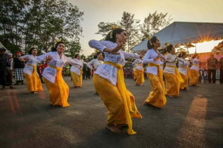
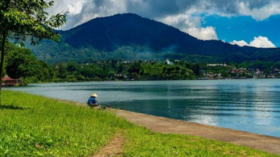

Exploring Bali: A Tropical Journey
Dive deep into the heart of Bali with our captivating travel tales. From the majestic temples and lush rice terraces to the vibrant cultural festivals and stunning beaches, we share our journey through Bali's enchanting landscapes.
Journey Highlights:
- Visit to Tanah Lot Temple at sunset
- Exploring Tegallalang Rice Terraces in Ubud
- Traditional Balinese dance performance
- Sunrise trek at Mount Batur volcano
- Beach hopping in Seminyak and Canggu
- Authentic local cuisine tasting experience
Discover the island's rich heritage, exquisite cuisine, and the warm hospitality of its people through our detailed travel experiences. This comprehensive guide takes you through hidden gems, local favorites, and must-visit attractions that make Bali truly magical.
Read Full Story
Tech Nomad's Guide to Bali
A comprehensive guide for digital nomads and remote workers looking to base themselves in Bali. Discover the best coworking spaces, reliable internet cafes, and productive work environments.
Tech Nomad Essentials:
- Top 5 coworking spaces in Canggu and Ubud
- Best cafes with reliable WiFi and power outlets
- Affordable accommodation for long-term stays
- Visa options for digital nomads
- Networking events and tech communities
- Work-life balance tips in tropical paradise
Learn how to maintain productivity while enjoying Bali's incredible lifestyle. From managing time zones to finding the perfect work setup, this guide covers everything a tech professional needs to thrive in Bali.
Read Full Story
Secrets of Ubud: Culture and Nature
Uncover the hidden treasures of Ubud, the cultural heart of Bali. From sacred temples nestled in jungle valleys to traditional art galleries and organic cafes, this guide reveals Ubud's best-kept secrets.
Ubud's Hidden Gems:
- Secret waterfall trails off the beaten path
- Traditional healing ceremonies and yoga retreats
- Local artisan workshops and craft studios
- Organic farm-to-table dining experiences
- Monkey Forest sanctuary early morning visits
- Sacred springs and holy water temples
Experience authentic Balinese culture through spiritual ceremonies, traditional dance performances, and interactions with local communities. This comprehensive guide helps you explore Ubud like a local, beyond the tourist hotspots.
Read Full Story
Adventures in Bali: Beyond the Beach
Join us as we venture beyond Bali's renowned beaches to uncover its lesser-known treasures. From the mystical Mount Batur at sunrise to the serene beauty of the Jatiluwih Rice Terraces and the spiritual ambiance of ancient temples.
Adventure Highlights:
- Mount Batur sunrise trekking experience
- White water rafting on Ayung River
- Cliff jumping at Hidden Canyon Beji Guwang
- Scuba diving at USS Liberty Shipwreck
- Mountain biking through jungle trails
- Canyoning in Gitgit and Aling Aling waterfalls
Our adventures in Bali reveal the island's diverse landscape and rich cultural tapestry. Whether you're seeking adrenaline-pumping activities or serene natural wonders, Bali offers unforgettable experiences for every type of adventurer.
Read Full Story
Bali's Culinary Journey
Embark on a delicious journey through Bali's diverse culinary landscape. From traditional warungs serving authentic Balinese cuisine to upscale restaurants offering fusion dishes.
Culinary Experiences:
- Traditional Balinese cooking classes
- Street food tours in Denpasar
- Farm-to-table organic restaurants
- Seafood BBQ on Jimbaran Beach
- Coffee plantation tours and tastings
- Vegetarian and vegan dining options
Experience the rich flavors of Bali, from spicy sambal to sweet coconut desserts. This guide takes you through must-try dishes, hidden local eateries, and the best places to experience Balinese hospitality through food.
Read Full Story
Finding Peace: Wellness in Bali
Discover why Bali is the world's premier destination for wellness, yoga, and spiritual healing. From luxury spa retreats to traditional healing ceremonies.
Wellness Experiences:
- Best yoga studios and retreat centers
- Traditional Balinese healing treatments
- Meditation and mindfulness workshops
- Organic spa treatments and massages
- Sound healing and reiki sessions
- Detox and wellness programs
Rejuvenate your mind, body, and soul in Bali's tranquil environment. This comprehensive guide helps you find the perfect wellness experience, whether you're seeking physical healing, spiritual growth, or simply relaxation.
Read Full Story